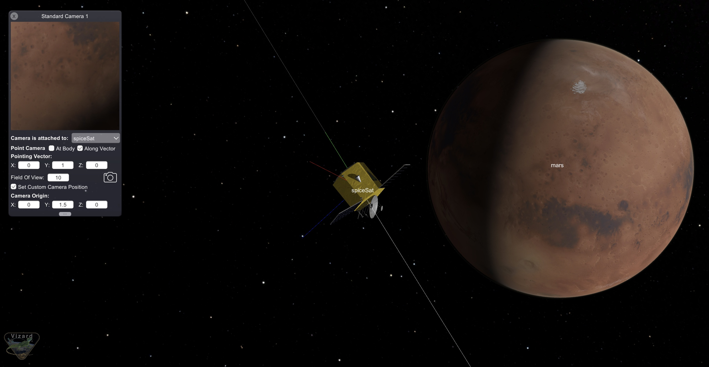

scenarioFlybySpice
Overview
The purpose of this simulation is to illustrate how to set a spacecraft’s translational motion using a custom Spice file for planetary flybys. This allows the user to easily visualize a mission trajectory using Vizard. Attitude pointing modes are also implemented in this script to enhance the mission simulation and illustrate other capabilities in Basilisk.
The script is found in the folder basilisk/examples and executed by using:
python3 scenarioFlybySpice.py
Configuring Translational Motion Using Custom Spice Files
This simulation script allows the user to specify a flyby of either Venus, Mars, or Earth. Note that the custom Spice
file for this scenario incorporates translational information for all three planetary flybys. Therefore, the user must
first specify the correct flyby date and time to initialize the simulation with the correct Spice information. This is
done using the timeIntString variable:
if planetCase == "venus":
timeInitString = "2028 August 13 0:30:30.0"
elif planetCase == "earth":
timeInitString = "2029 June 20 5:30:30.0"
elif planetCase == "mars":
timeInitString = "2031 October 3 20:00:00.0"
else:
print("flyby target not implemented.")
exit(1)
Next the custom Spice file must be loaded. The loadSpiceKernel() method of class SpiceInterface
is called to load the file. This method accepts the file name and the path to the desired file to load:
spiceObject.loadSpiceKernel("max_21T01.bsp", os.path.join(path, "dataForExamples", "Spice/"))
Note that setting up the orbital elements and initial conditions using the orbitalMotion module is no longer needed.
After the Spice file is loaded, connect the configured Spice translational output message to the spacecraft object’s
transRefInMsg input message:
scObject.transRefInMsg.subscribeTo(spiceObject.transRefStateOutMsgs[0])
Finally, add the Spice object to the simulation task list:
scSim.AddModelToTask(simTaskName, spiceObject)
Implementing Attitude Pointing Modes
Now that the spacecraft’s translational motion is set, the user is free to implement attitude changes to enhance the mission visualization. Three attitude pointing modes are incorporated into this script for each planetary flyby case.
First, an ephemerisConverter module must be configured to convert Spice messages of type plantetStateOutMsgs
to ephemeris messages of type ephemOutMsgs. This converter is required for all attitude pointing modules:
ephemObject = ephemerisConverter.EphemerisConverter()
ephemObject.ModelTag = 'EphemData'
ephemObject.addSpiceInputMsg(spiceObject.planetStateOutMsgs[earthIdx])
ephemObject.addSpiceInputMsg(spiceObject.planetStateOutMsgs[sunIdx])
ephemObject.addSpiceInputMsg(spiceObject.planetStateOutMsgs[moonIdx])
ephemObject.addSpiceInputMsg(spiceObject.planetStateOutMsgs[venusIdx])
ephemObject.addSpiceInputMsg(spiceObject.planetStateOutMsgs[marsIdx])
scSim.AddModelToTask(simTaskName, ephemObject)
Next, the extForceTorque and simpleNav modules must be set configured:
extFTObject = extForceTorque.ExtForceTorque()
sNavObject = simpleNav.SimpleNav()
The torque module object is added to the spacecraft as a dynamics effector and the simple navigation module’s spacecraft state input message must be subscribed to the spacecraft object’s state output message:
scObject.addDynamicEffector(extFTObject)
sNavObject.scStateInMsg.subscribeTo(scObject.scStateOutMsg)
Both modules are added to the simulation task:
scSim.AddModelToTask(simTaskName, extFTObject)
scSim.AddModelToTask(simTaskName, sNavObject)
Next the velocityPoint module is configured for each planet case. This module fixes the spacecraft attitude in the
orbit velocity frame. See C Module: velocityPoint for a more detailed description of this module. The Mars velocity-pointing case is shown below:
velMarsGuidance = velocityPoint.velocityPoint()
velMarsGuidance.ModelTag = "velocityPointMars"
velMarsGuidance.mu = marsMu
The velocity pointing module has two input messages that must be connected. First, the module’s
transNavInMsg message is subscribed to the simple navigation module’s transOutMsg message. The module’s
celBodyInMsg message must be connected to the flyby planet’s ephemeris output message:
velMarsGuidance.transNavInMsg.subscribeTo(sNavObject.transOutMsg)
velMarsGuidance.celBodyInMsg.subscribeTo(ephemObject.ephemOutMsgs[marsIdx])
Finally, add the module to the simulation task list:
scSim.AddModelToTask(simTaskName, velMarsGuidance)
The other attitude guidance modules used in this simulation are implemented in similar manner. The locationPointing
module points a body-fixed spacecraft axis towards a particular location of interest. Modes for Earth- and Sun-pointing
are implemented by subscribing the module’s celBodyInMsg input message to the desired planet’s ephemeris output
message. The module’s pHat_B vector is set according to which body-fixed vector should point towards the location
of interest. See C Module: locationPointing for a more detailed description of this module.
The Earth-pointing guidance module setup is shown below:
earthPointGuidance = locationPointing.locationPointing()
earthPointGuidance.ModelTag = "antennaEarthPoint"
earthPointGuidance.scTransInMsg.subscribeTo(sNavObject.transOutMsg)
earthPointGuidance.celBodyInMsg.subscribeTo(ephemObject.ephemOutMsgs[earthIdx])
earthPointGuidance.scTransInMsg.subscribeTo(sNavObject.transOutMsg)
earthPointGuidance.scAttInMsg.subscribeTo(sNavObject.attOutMsg)
earthPointGuidance.pHat_B = [0.0, 0.0, 1.0]
earthPointGuidance.useBoresightRateDamping = 1
scSim.AddModelToTask(simTaskName, earthPointGuidance)
Next, a science-pointing mode is implemented using the hillPoint module. This module points a body-fixed location
on the spacecraft designated as a camera towards the flyby planet of interest. See C Module: hillPoint for a more
detailed description of this module:
cameraLocation = [0.0, 1.5, 0.0]
sciencePointGuidance = hillPoint.hillPoint()
sciencePointGuidance.ModelTag = "sciencePointAsteroid"
sciencePointGuidance.transNavInMsg.subscribeTo(sNavObject.transOutMsg)
sciencePointGuidance.celBodyInMsg.subscribeTo(ephemObject.ephemOutMsgs[planetIdx])
scSim.AddModelToTask(simTaskName, sciencePointGuidance)
Next, the attitude tracking error module must be configured with the initial flight mode:
attError = attTrackingError.attTrackingError()
attError.ModelTag = "attErrorInertial3D"
scSim.AddModelToTask(simTaskName, attError)
attError.attRefInMsg.subscribeTo(velEarthGuidance.attRefOutMsg) # initial flight mode
attError.attNavInMsg.subscribeTo(sNavObject.attOutMsg)
Then, the flight software vehicle configuration message is configured:
vehicleConfigOut = messaging.VehicleConfigMsgPayload()
vehicleConfigOut.ISCPntB_B = I # use the same inertia in the FSW algorithm as in the simulation
vcMsg = messaging.VehicleConfigMsg().write(vehicleConfigOut)
The MRP Feedback control module is configured next for attitude control:
mrpControl = mrpFeedback.mrpFeedback()
mrpControl.ModelTag = "mrpFeedback"
scSim.AddModelToTask(simTaskName, mrpControl)
mrpControl.guidInMsg.subscribeTo(attError.attGuidOutMsg)
mrpControl.vehConfigInMsg.subscribeTo(vcMsg)
mrpControl.K = 3.5
mrpControl.Ki = -1.0 # make value negative to turn off integral feedback
mrpControl.P = 30.0
mrpControl.integralLimit = 2. / mrpControl.Ki * 0.1
To complete the feedback loop, the MRP feedback module’s cmdTorqueOutMsg output message is connected to the
external torque module’s cmdTorqueInMsg:
extFTObject.cmdTorqueInMsg.subscribeTo(mrpControl.cmdTorqueOutMsg)
Additional Visualization Features
To add a visualization of antenna transmission back to Earth during the Earth-pointing mode, a transceiver is created
through the vizInterface:
transceiverHUD = vizInterface.Transceiver()
transceiverHUD.r_SB_B = [0.23, 0., 1.38]
transceiverHUD.fieldOfView = 40.0 * macros.D2R
transceiverHUD.normalVector = [0.0, 0., 1.0]
transceiverHUD.color = vizInterface.IntVector(vizSupport.toRGBA255("cyan"))
transceiverHUD.label = "antenna"
transceiverHUD.animationSpeed = 1
To add a camera to the science-pointing mode, the createStandardCamera method is used:
vizSupport.createStandardCamera(viz, setMode=1, spacecraftName=scObject.ModelTag,
fieldOfView=10 * macros.D2R,
pointingVector_B=[0,1,0], position_B=cameraLocation)
After the simulation is initialized, functions are created for each attitude flight mode. Each function accepts the desired simulation time and executes the simulation after setting additional flight mode parameters. Note that because the velocity pointing mode depends on which planet is specified, this function is generalized to also accept the desired guidance configuration module:
def runVelocityPointing(simTime, planetMsg):
nonlocal simulationTime
attError.attRefInMsg.subscribeTo(planetMsg)
transceiverHUD.transceiverState = 0 # antenna off
attError.sigma_R0R = [np.tan(90.*macros.D2R/4), 0, 0]
simulationTime += macros.sec2nano(simTime)
scSim.ConfigureStopTime(simulationTime)
scSim.ExecuteSimulation()
To execute the desired attitude-pointing mode, the run function must be called with the desired simulation time:
runVelocityPointing(4*hour, velPlant.attRefOutMsg)
Ensure to unload the Spice kernel at the end of each simulation:
spiceObject.unloadSpiceKernel("max_21T01.bsp", os.path.join(path, "Data", "Spice/"))
Simulation Visualization In Vizard
The following image illustrates the expected visualization of this simulation script for a flyby of Mars.
